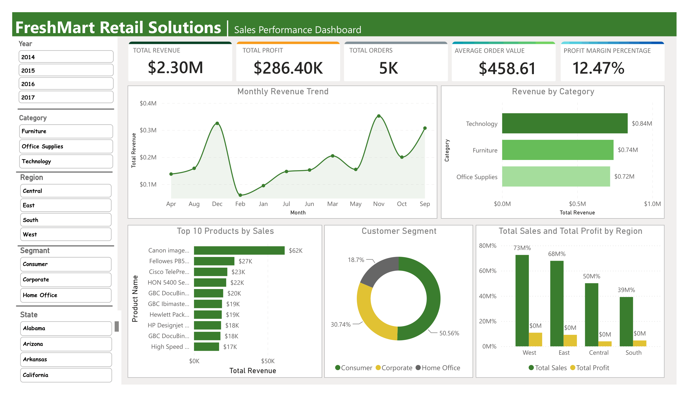
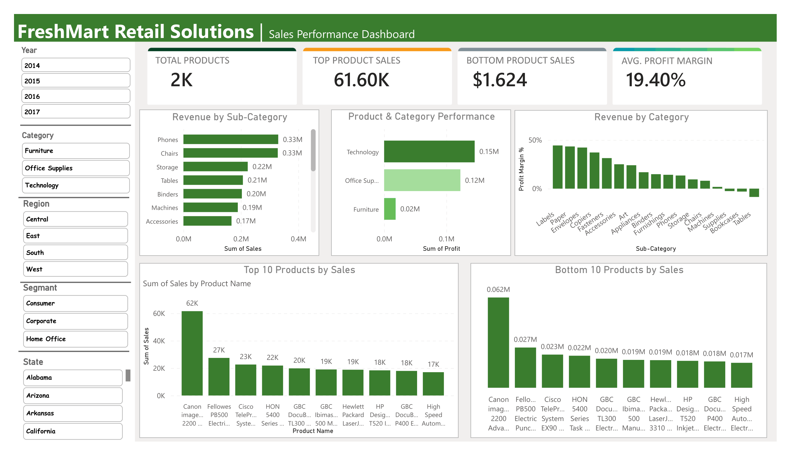
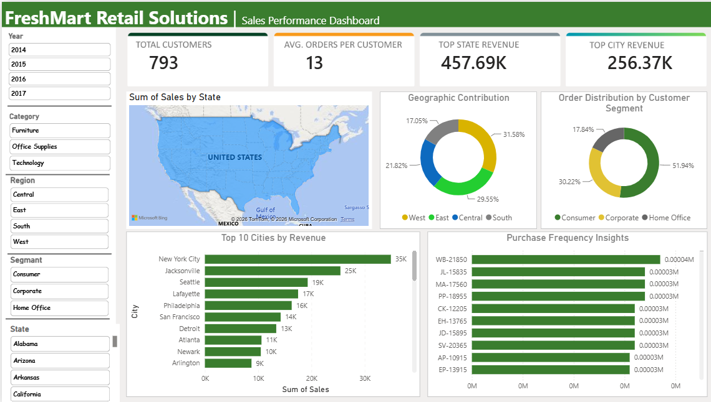
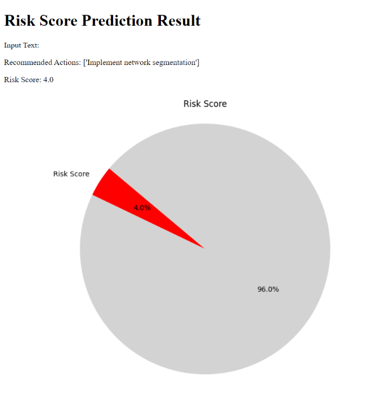
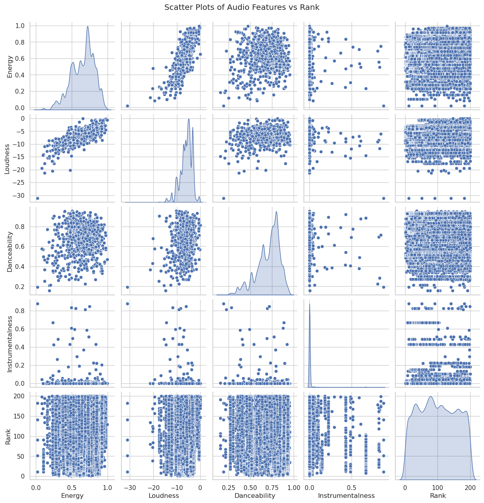
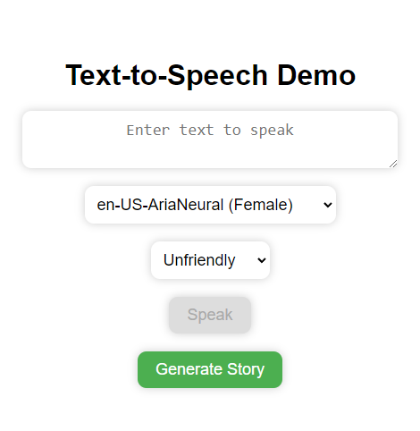

Data Analytics & BI Coach and Data Scientist based in Faisalabad, Pakistan. I turn raw data into Power BI dashboards, machine learning models, and tools people actually use.
See my work Contact meMy background is in applied mathematics — an M.Phil in Applied Mathematics, built on an M.Sc in Mathematics and a B.Sc in Mathematics and Physics. That foundation still shapes how I approach [...]
Since then I've moved into data analytics, business intelligence, and machine learning — cleaning retail data into Power BI dashboards, building ML pipelines with better feature engineering, [...]
Today I coach Data Analytics & BI under a Government of Pakistan digital-skills initiative, and keep building Power BI and Python projects on the side.
An interactive Power BI dashboard for a retail supermarket chain. I cleaned and transformed the raw sales data in Power Query, wrote the DAX measures behind every KPI, and designed three link[...]






Have a dataset that needs a story, or want help getting started with Power BI or analytics? I'd like to hear from you.